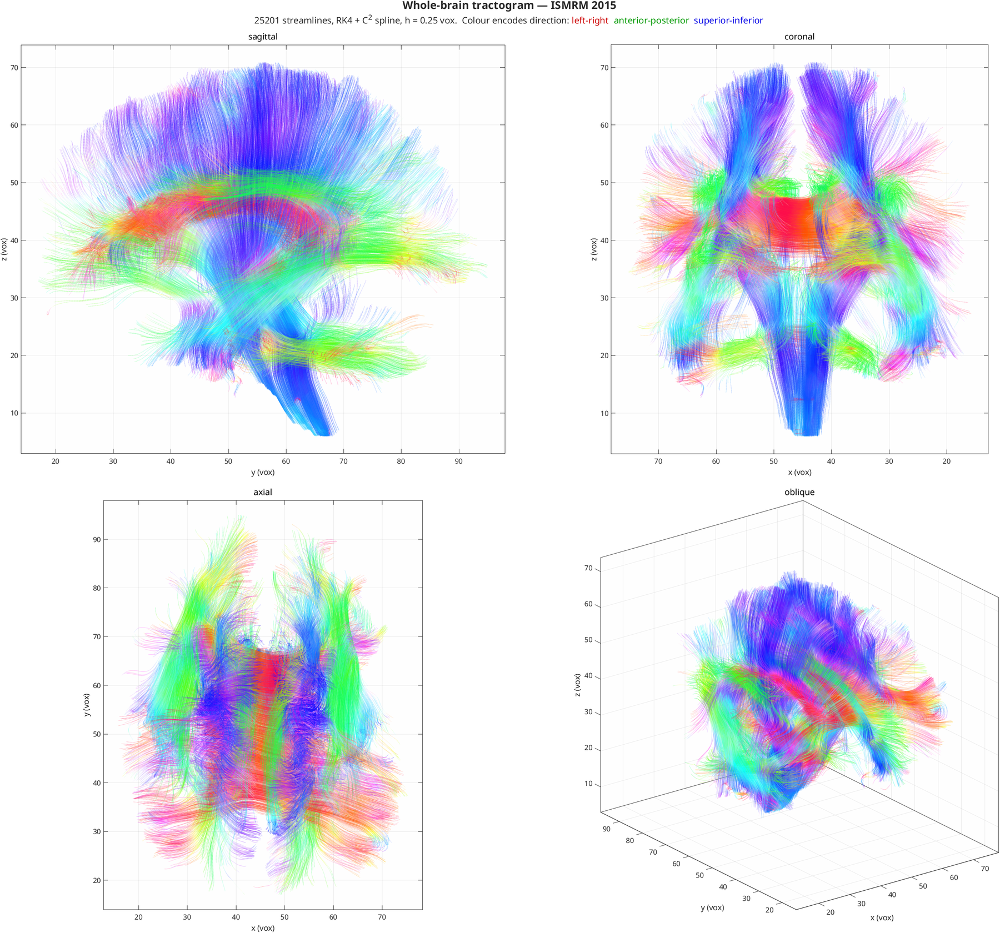

HINEC: HIgh-order NEural Connectivity¶
Human brain white matter tractography pipeline with YAML-based parameter configuration.

Whole-brain tractogram of the ISMRM 2015 phantom — RK4 with a C² spline interpolant. Colour encodes direction: red left–right, green anterior–posterior, blue superior–inferior.
Pipeline¶
HINEC takes raw diffusion-weighted MRI (dMRI) and produces streamline tractography, in six stages:
- Preprocessing — denoising, motion and eddy-current correction, brain extraction and registration, via FSL
- Diffusion tensor estimation — SPD-constrained fitting
- FA computation — fractional anisotropy maps
- Parcellation — atlas-based brain region labelling
- Tractography — FACT, interpolated high-order streamlines, or connection-form Method of Moving Frames
- Visualization — 3D rendering and pre-cached slice viewing
Three trackers share one processed nim struct, selected by algorithm: in the
config: standard (FACT, discrete voxel tensors), hinec (interpolated direction
field, Euler/RK2/RK4/RKF45 integration, optional ACT) and mmf (moving frames
driven by the connection 1-form). The direction source is dti (tensor principal
eigenvector) or csd (FOD peaks), independently of the integrator.
Quick Start¶
Preprocess once, then iterate on tractography:
# Build the processed nim (preprocessing + DTI + FA + parcellation)
./bin/run_hinec.sh data/ismrm2015/ismrm2015 ismrm2015.mat config/ismrm2015.yml
# Track on the already-processed nim — one run directory per config
./bin/run_tractography.sh hinec_dti --score
# Sweep a parameter without writing a new config
./bin/run_tractography.sh hinec_dti --set integrator.step=0.05
Or from MATLAB:
config = load_config_yaml('config/hinec_dti.yml');
run_info = create_run_directory('config/hinec_dti.yml');
main('data/ismrm2015/ismrm2015', 'ismrm2015.mat', config, run_info);
runTractography(fullfile(run_info.output_dir, 'ismrm2015.mat'), config, run_info);
Navigation¶
| Section | Description |
|---|---|
| Getting Started | Prerequisites, installation and first run |
| Pipeline | End-to-end data flow and module overview |
| Tractography | Standard, high-order and MMF fibre tracking |
| Configuration | YAML parameter reference |
| Visualization | 3D and distributed slice viewing |
| API Reference | Complete function reference |
| Math Foundations | Formulas and numerical methods |
| Solution Verification | Convergence under refinement, and the observed order |
| Team | Researchers and advisor |